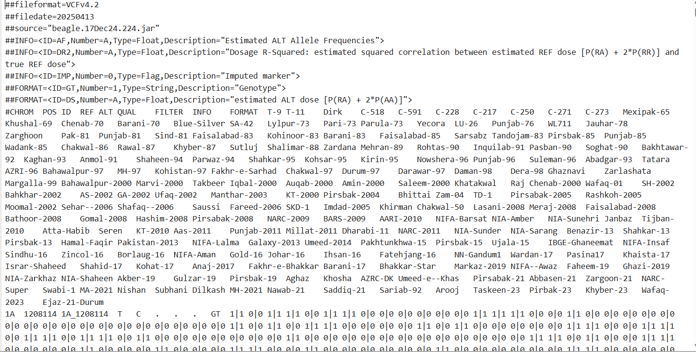

Beagle Software
Beagle is a powerful software tool used for genotype imputation and phasing. It helps fill in missing genotype data by leveraging population genetics and statistical models.
Beagle uses the concept of Hidden Markov Models (HMM) and haplotypes to perform imputation:
- Hidden Markov Model (HMM): A statistical model that assumes the observed data are generated by hidden states. In genotype imputation, HMM models the sequence of haplotypes along the chromosome, capturing the dependencies between neighboring SNPs.
- Haplotypes: Groups of alleles or genetic variants that tend to be inherited together from a single parent. Haplotypes represent the structure of the genome more accurately than individual SNPs and improve the accuracy of imputation.
VCF File before Imputation
